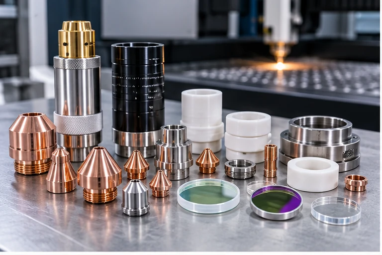

Requirement
Define the intended outcome, machine or part context and any customer acceptance condition.
Selected CO₂ laser machine components and maintenance-related requirements reviewed against the actual installed system.
These images illustrate the service stages and technical evidence relevant to this case pattern.


CO₂ laser equipment varies by machine type, tube/source arrangement, optics, cooling and motion system. Crecer Grande reviews make/model, photographs, dimensions and existing part details before proposing an identification, sourcing-support or service route.

Define the intended outcome, machine or part context and any customer acceptance condition.
Collect drawings, photos, dimensions, material, artwork, nameplates or other relevant inputs.
Proceed through the agreed engineering, marking, sourcing-support or manufacturing service route.
Close with the agreed visual, dimensional, functional or documentation evidence.
Share photographs, drawings, dimensions, machine details or the outcome you need.